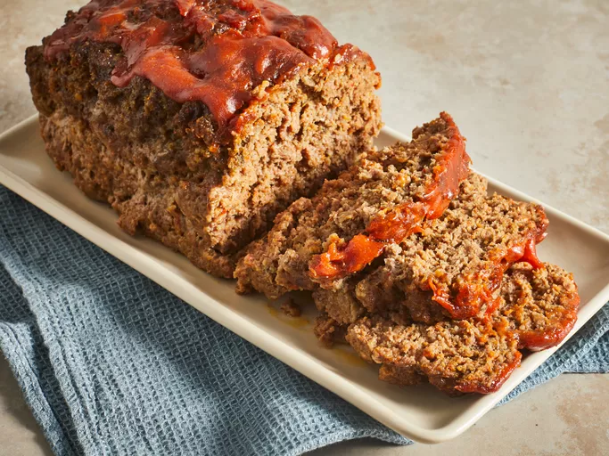

Meatloaf

Description
This traditional meatloaf recipe made with sautéed vegetables, spices,
and bread crumbs is moist and flavorful and topped with an old-fashioned
glaze.
Serve this hearty meal on cool fall or winter evenings with mashed
potatoes and a simple mushroom gravy.
Ingredients
- Beef (typically ground chuck)
- vegetables
- Pureed carrots
- Celery
- Onions
- Bell peppers
- Mushrooms
- Garlic
- Worcestershire Sauce
- Eggs
- Spices
- Dried Italian herbs
- Salt
- Pepper
- Cayenne pepper
- Bread crumbs
- Glaze
Steps
Form the Meatloaf
Combine the vegetables, ground chuck,
Worcestershire sauce, spices, and egg. Sprinkle in the bread crumbs
and mix them with your hands (be careful not to overmix).Bake
Form the meat mixture into a loaf and place it in a
prepared baking pan. Bake for about 15 minutes.Make the Glaze
Combine brown sugar, ketchup, Dijon, and
sriracha to make the glaze.Glaze the Meatloaf
Spoon the glaze over the slightly hot
meatloaf. Return meatloaf to the oven and bake until the internal
temperature reaches 160 degrees F.